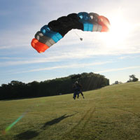

 Jumping tandem is a great way to experience the thrilling excitement of freefall skydiving and the serenity of parachute flight! Whether you're after a once-in-a-lifetime experience, looking for an annual outing or you want to learn to skydive, a tandem is a great introduction to the sport.
No ground school is required. After a short video and a personalized briefing with your instructor, you'll board the plane together with a parachute and harness built for two.
After a 50 second freefall from 14,500 feet, you'll enjoy a scenic 3-5 minute parachute flight before landing.
Our USPA certified professional tandem instructors will show you a great time, and available video and photography packages let you relive the jump forever.
Choose Milwaukee Skydivers Club because we offer:
- fun filled customer service oriented experience
- Highly experienced instructors with a commitment to safety
- Instructors who take the time to ensure you have the best experience possible
- A beautiful view of all the local lakes
- Modern FAA certified equipment
- Great facilities
- Competitive individual and group pricing as low as $99!
- There is a reason that Milwaukee Skydivers Club is still around after over 50 years, we are committed to the advancement of sport skydiving and to you - our customers!
To get started with your reservation, make sure that you check out all the requirements and then call our office!
Milwaukee Skydivers Club is pleased to accept cash, your in-state personal check, traveler's check, VISA, MasterCard, Discover, or American Express.
Ultimate Tandem
The Ultimate Tandem takes you all the way — to almost 18,000 feet.
- High altitude jump from almost 18,000 feet above sea level — so high we will use in-cabin supplemental oxygen.
- In-air videographer shooting video and digital still photos.
- Custom edited DVD of preparation, jump and landing.
- Not available in off-season.
- Availability subject to air traffic control altitude approval.
- All age and weight restrictions apply.
- Reservation and deposit required.
Pricing
The VIP Tandem Experience
Red Carpet: The VIP Tandem Experience goes above and beyond. We're rolling out the red carpet so be prepared for the most outrageous experience we can offer! Limited space is available so make your reservation today.
- Personal Sky Knights guide for your entire visit.
- Priority boarding on first available plane load.
- Your choice of any one of our Milwaukee Skydivers Club t-shirts.
- High altitude jump from almost 18,000 feet above sea level — so high we will use in-cabin supplemental oxygen.
- 2 in-air videographers shooting video and digital still photos.
- Complimentary champagne upon landing.
- Custom edited DVD of preparation, jump and landing from both cameras. Includes an extra copy to share with family and friends.
- Not available in off-season.
- Availability subject to air traffic control altitude approval.
|